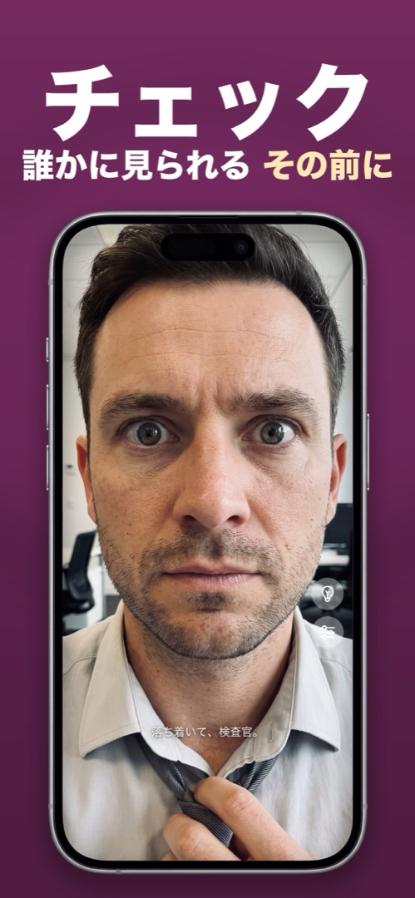

iPhoneのフロントカメラで顔が反転するのはなぜ？
自撮りを構えて、プレビューでは普通に見えるのに、保存された写真はどこか変。分け目が反対側、顔がなんとなく自分らしくない。何も壊れていません。何が起きているのか、どうすればいいのかを解説します。
プレビュー＝鏡。保存された写真＝他人から見たあなた。
自撮りを構えている間、iOSはプレビューを鏡像にして、鏡を見ているように感じさせます——右手を動かせば右側の手が動く。しかしシャッターを押すと、写真は反転なしで、つまり目の前に立っている人から見える向きで保存されます。
それが「変」に感じる理由はよく研究されています。単純接触効果です。あなたは一生のあいだ、毎日何千回も鏡像の自分を見てきたので、脳はそれを「正しい」顔だと認識しています。完全に左右対称な顔は存在しないため、反転していない写真は少しズレて見えるのです——あなたにだけ。友人たちは写真の向きのあなたに慣れています。
これを変えるiOSの設定
iOS 14以降には切り替えがあります：設定 → カメラ → 前面カメラを左右反転。オンにすると、自撮りはプレビューと同じ向きで保存されます。写真の問題はこれで解決。ただし、カメラアプリを鏡として使う根本的な問題は解決しません。シャッターは親指の下のまま、前面ライトはなく、プレビューは操作ボタンだらけです。
鏡アプリが常に鏡像である理由
鏡アプリの仕事はひとつ——ガラスの鏡のように振る舞うこと。反転させる「保存版」が存在しないので、見えるのは常にあなたが見慣れた鏡像で、輝度は最大、必要なときにはズームとリングライトが使えます。撮るのではなく確認したいだけなら、これが正しい道具です。
Mirrorlyでのやり方
Mirrorlyでは何も保存されないので、この疑問はそもそも生まれません。身だしなみを確認するには：
- Mirrorlyを開きます。フロントカメラが本物の鏡と同じ鏡像で起動し、そのまま変わりません。
- 直すべきところを直します——髪、襟、歯。細部はズームスライダー、暗い部屋では電球ボタンを。
- アプリを閉じます。写真は撮られていないので、反転したバージョンがライブラリで待っていることもありません。

MirrorlyはApp Storeで無料で試せます。 リングライト・ズーム・最大輝度を備えた、iPhoneの全画面ミラー。3回まで無料、その後は一回限りの購入。サブスクなし、写真の保存なし、アカウント不要、広告なし。